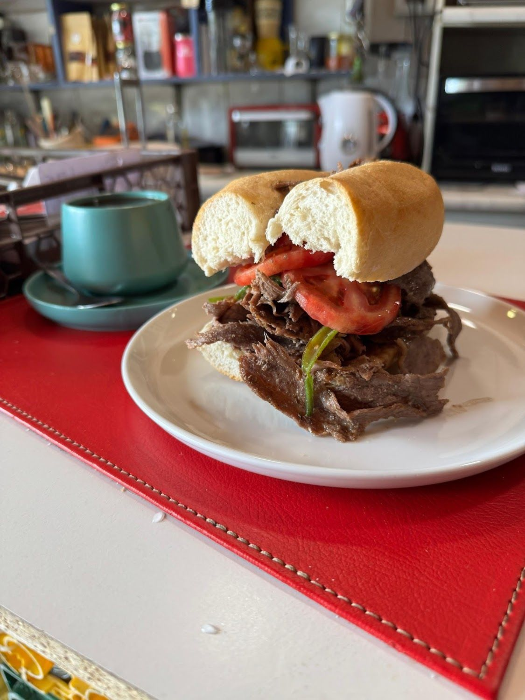
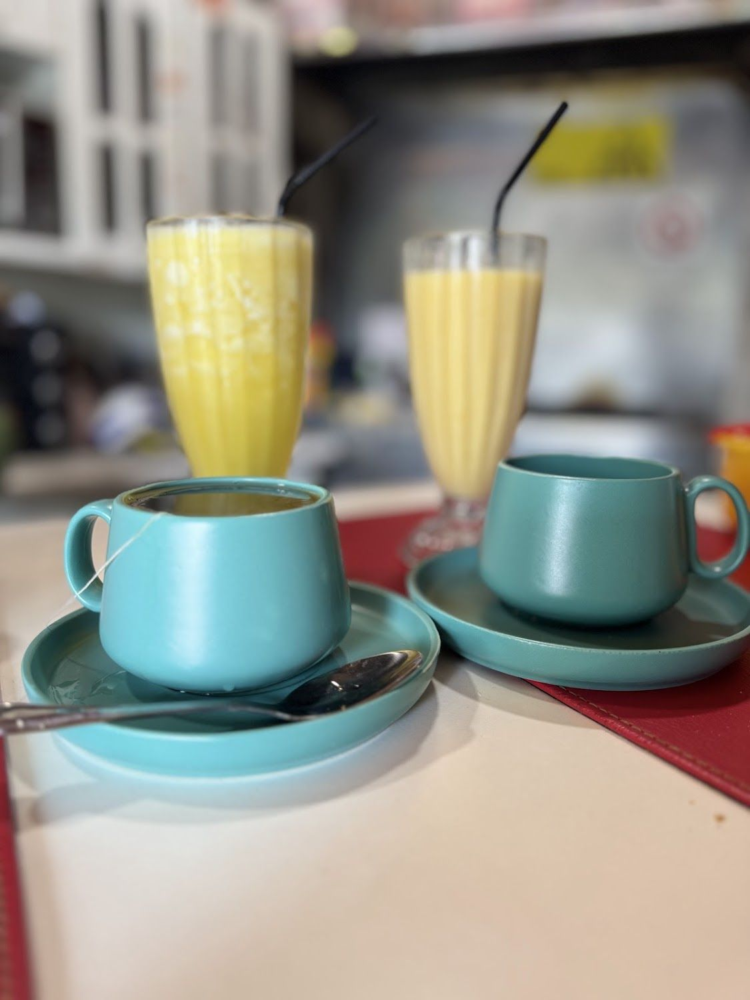
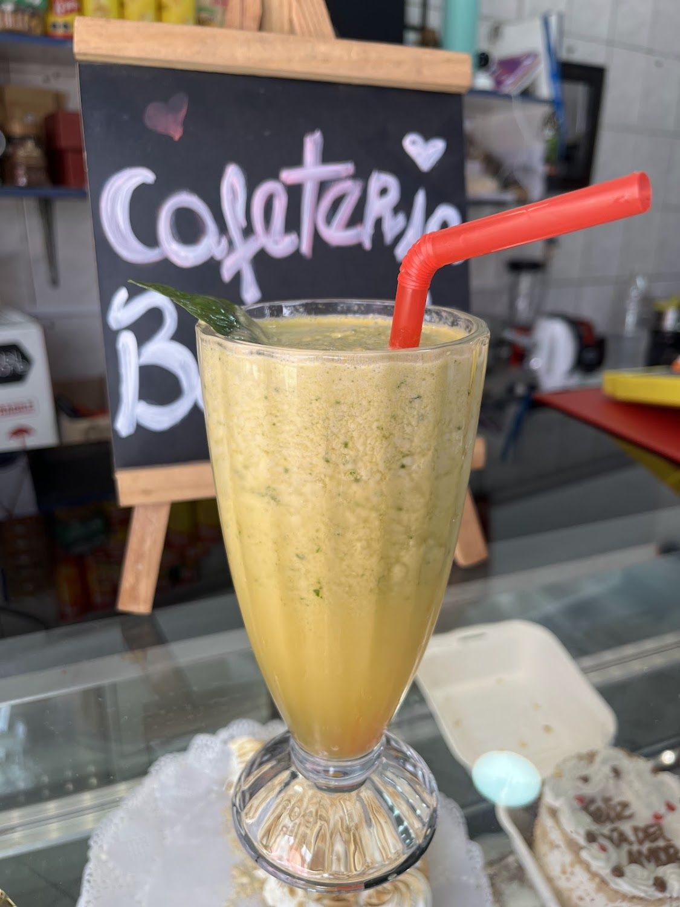
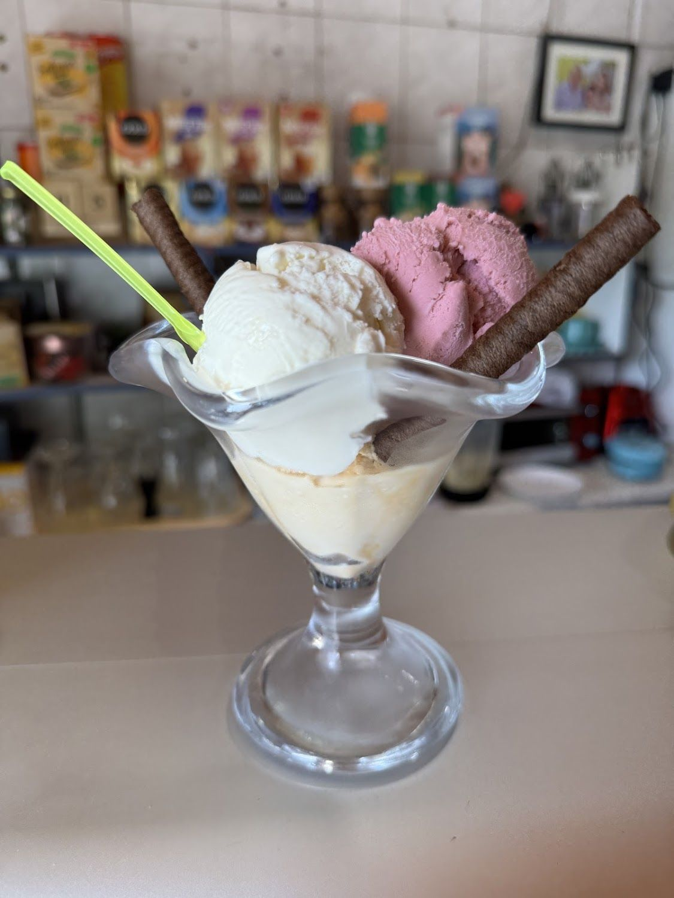
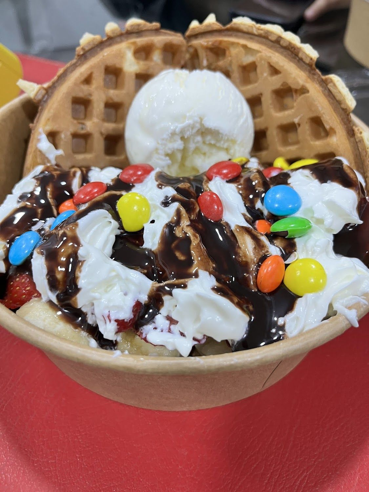
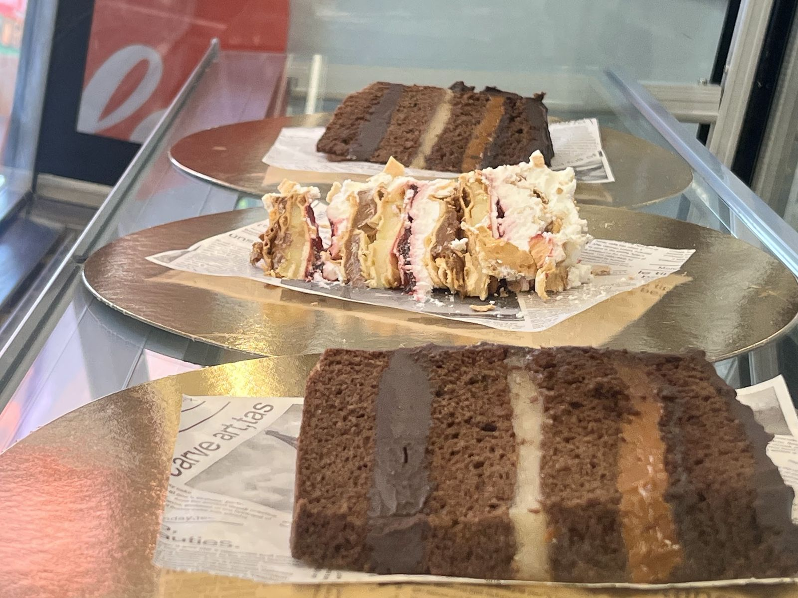
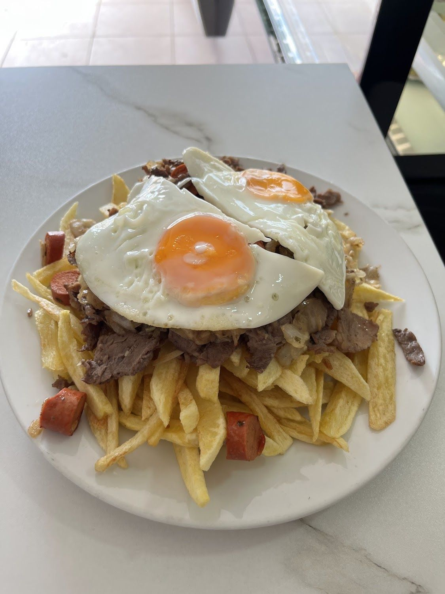

Churrasco italiano
Es el destacado nº1 de la carta. Y el nº2 es el pisco sour: acá se viene a comer y a quedarse.
Ver la carta →Los Acacios 5481 · Conchalí
Churrasco italiano, chorrillana, copas de helado, waffles y tortas por porción. Con wifi, salón climatizado, terraza y estacionamiento amplio.
De lunes a viernes, 13:00 a 21:00

Ojo con el horario: abrimos a la una de la tarde, no en la mañana. Cerramos el sábado — y el domingo sí abrimos, de 10:00 a 18:00.
Ver la semana completa →Es el destacado nº1 de la carta. Y el nº2 es el pisco sour: acá se viene a comer y a quedarse.
Ver la carta →Copas de helado con barquillos, waffles con M&M's, galletas gigantes y torta selva negra.
Ver los dulces →“Muy muy amplio estacionamiento, zona wifi, salón climatizado, también terraza.”
Cómo llegar →Nosotros
Manteles rojos, tazas de loza y una pizarra escrita a mano.

“Amplia variedad, desde salado a dulce. El personal es muy amable, el espacio limpio y servicio rápido 10/10.” Martina Mena S.
En la misma mesa cabe un churrasco italiano, una chorrillana con huevo, una copa de helado y una malteada. No es una cafetería de especialidad ni una heladería: es las dos cosas, en un local de barrio.

Una clienta lo enumeró mejor que nadie: “Muy muy amplio estacionamiento, zona wifi, salón climatizado, también terraza”.
Otro cliente lo resume en una línea: “yo personalmente vengo los viernes lo paso super bien”.
Ver horario y mapa →



Carta
Reseñas
Lo que dicen nuestros clientes en Google.
★★★★★
Amplia variedad, desde salado a dulce. El personal es muy amable, el espacio limpio y servicio rápido 10/10
★★★★★
Muy muy amplio estacionamiento, zona wifi, salón climatizado,,, también terraza
★★★★★
Buen servicio lugar agradable yo personalmente vengo los viernes lo paso super bien
Redes
Todos nuestros canales, en un solo lugar.
Hacen entrega a domicilio.
Visítanos
Los Acacios 5481
Conchalí, Región Metropolitana
Plus Code J8C6+RJ · con estacionamiento amplio
De lunes a viernes, 13:00 a 21:00
El domingo es el único día que abrimos en la mañana, y el sábado es el único que cerramos.